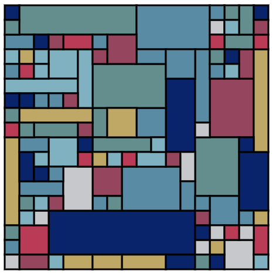
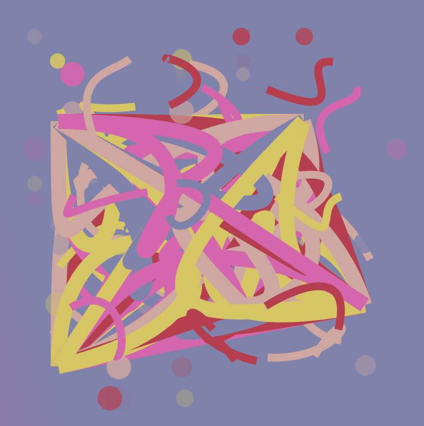

My name is Julian, and these are my delvings into generative art with code. Most work is made in p5.js.
My goal with this sketch was to create an algorithm that could fill any rectangle with randomly sized smaller rectangles.
I wanted to challenge myself here. While I find p5.js to be very useful and a lot of fun, I wanted to know what it would take to create a program that renders SVG without the use of an external library.
